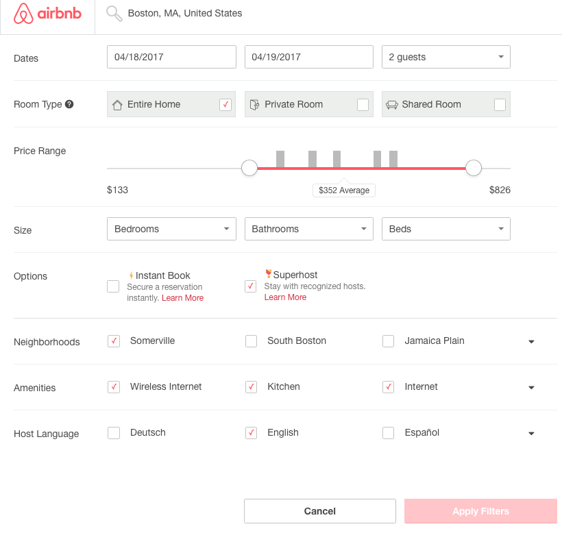
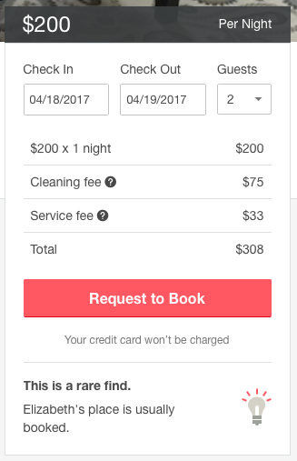
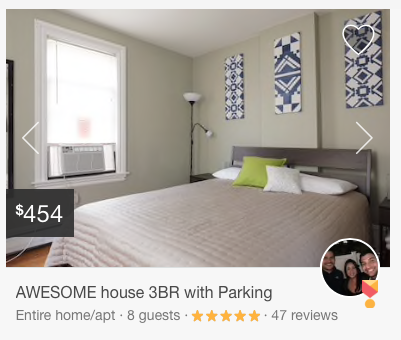
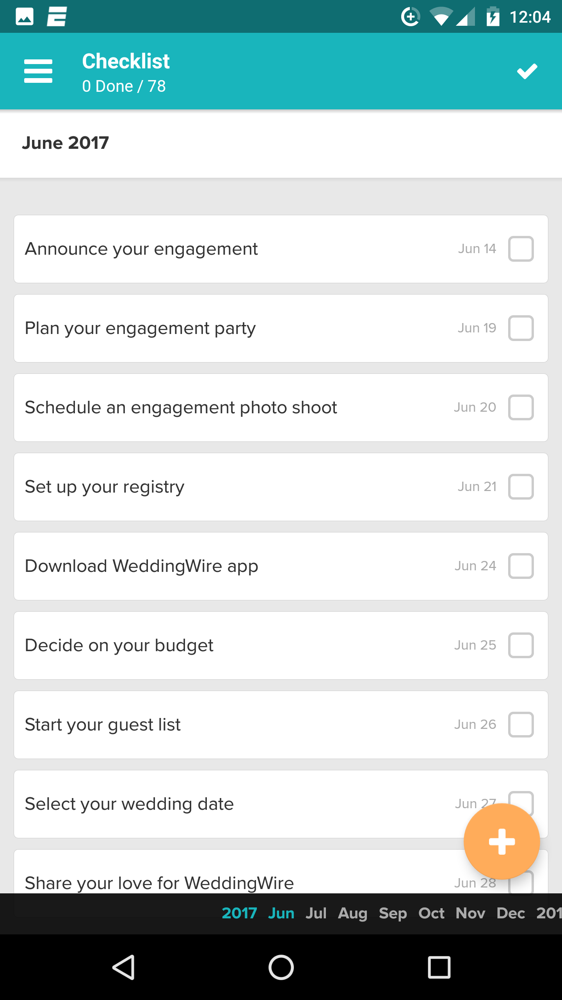

Inspirational Designs
Pinterest | Casey Alvarado
Pinterest is an inspirational website for our future designs. We chose Pinterest because, through user research, we discovered that many brides currently use Pinterest to collect inspiration for their weddings. Therefore, if we design a product in the inspiration collection space, we would use Pinterest as inspiration because it is already familiar to our users. Pinterest allows a user to aggregate all of their inspirations on one board, like mine shown below.
 Each item on my board is a result from me searching through the general wedding board, reading the articles I found interesting, and then “pinning” or saving interesting articles to my weddings board. The widths of each piece on my board are the same size, giving each piece equal weight when my eyes scan the board from left to right. The heights of course, are not the same size because each article is a different size. The uneven heights gives Pinterest boards a “scrapbook” or “notebook” feel because random thoughts written in notebooks are never in straight lines. We would borrow a similar collection process and display board. We would add more functionality to Pinterest. For example, a user could search for “caterers” on our interface and all of the wedding caterers in the area (customizable) would pop up. Caterers could upload pictures of their work from previous weddings, their menus, their prices, and their schedule. The brides could then go through our interface to browse the different works of many caterers, evaluating each one on presentation, price online, and contact a caterer if the caterer meets all of their criteria. Currently Pinterest has a messaging system where a user can message their friends.
Each item on my board is a result from me searching through the general wedding board, reading the articles I found interesting, and then “pinning” or saving interesting articles to my weddings board. The widths of each piece on my board are the same size, giving each piece equal weight when my eyes scan the board from left to right. The heights of course, are not the same size because each article is a different size. The uneven heights gives Pinterest boards a “scrapbook” or “notebook” feel because random thoughts written in notebooks are never in straight lines. We would borrow a similar collection process and display board. We would add more functionality to Pinterest. For example, a user could search for “caterers” on our interface and all of the wedding caterers in the area (customizable) would pop up. Caterers could upload pictures of their work from previous weddings, their menus, their prices, and their schedule. The brides could then go through our interface to browse the different works of many caterers, evaluating each one on presentation, price online, and contact a caterer if the caterer meets all of their criteria. Currently Pinterest has a messaging system where a user can message their friends.
 We would not want to borrow this feature because the caterer might not necessarily be “your friend”. Instead we would want to add the option to message a caterer on a board. We would want to use a similar collection mechanism and board layout as Pinterest, but add more functionality so that brides and grooms can, in addition to collecting their ideas, also find services for their wedding.
We would not want to borrow this feature because the caterer might not necessarily be “your friend”. Instead we would want to add the option to message a caterer on a board. We would want to use a similar collection mechanism and board layout as Pinterest, but add more functionality so that brides and grooms can, in addition to collecting their ideas, also find services for their wedding.
Airbnb | Annabel Consilvio

The similarities of a wedding planning interface and a room renting app might not be immediately relevant, but in both cases the user is typically in a vulnerable position and is looking for an encouraging and easy experience. Therefore, we can learn a lot about how to design a welcoming, reliable app from Airbnb’s interface and user experience.
To begin with, we can look at the way Airbnb creates a highly customizable search engine for their properties, which is something that could be applied to nearly every industry in which someone planning their own wedding interacts. If you absolutely need white roses for your wedding with 200 people on the 21st, a few small changes to the fields Airbnb has developed could help you find all of the possible florists in the area. The search function also allows you to filter by price range, which is particularly helpful for a bride or groom-to-be planning their own wedding as it helps them keep to their ever important budget.
Additionally, we can look at how Airbnb deals with information hierarchy on one of its home pages. Specifically, the price breakdown on the side of the page gives the user a sense of security and confidence because it is clear exactly what they are paying and why. There are no hidden fees that suddenly pop out after you start the booking process-- everything is out in the open from the first time you enter the page, which improves the overall experience for the user. Wedding planners have a tight budget and a lot of their decisions are made around how much can be spent on what, and this kind of clarity is something that would be important (and appreciated) in a wedding planning app because it empowers users and gives them all of the information they need in a succinct, clear manner.

Bringing two perfect strangers together to share a home for a night is a difficult job, but with their website, Airbnb has managed to not only create a sense of security for both the renter and rentee, but also perfect the interactions of the site to encourage a level of trust between the two parties with a variety of features. First, Airbnb allows for in-app communication between the two parties, which is important because it feels more secure and separated from people’s typical forms of communication like text and email. The in-app conversations also allow for a level of non-commitment on behalf of the planner (or rentee) because the interaction is more informal. If the planner finds out something that they don’t like, ending an online conversation is a lot easier than trying to transition out of a potentially more formalized partnership. Since wedding planners are often trying to decide between multiple vendors for the same thing, this amount of flexibility is important to them.

Finally, Airbnb’s superusers feature could be integral to the lives of wedding planners. The features allows for property posters with high reviews to be marked with a special badge and therefore promotes a greater sense of trust with these specific posters. Having this kind of confidence and trust in a potential vendor is an important part of planning any wedding, which is why professional wedding planners often have partnerships with specific vendors. These community based reviews could really empower people who are planning their own weddings and help support them in making the right decision for them.
Although Airbnb does a lot of things right, there are a few things on their site that would be less applicable for a wedding planner. For example, Airbnb allows posters to take their own unprofessional images of their spaces, which works for something more casual like Airbnb, but probably would not for a more formal event like a wedding. Planners want to be confidant that what they are purchasing will look beautiful on their big day, and having dimly lit and often pixelated photos does not encourage that kind of confidence.
Wedding Wire | Patrick Huston
WeddingWire attempts to offer a full solution for creating a comprehensive to-do list, keeping track of budgets and guest lists, connecting users with vendors, and offering creative inspiration. From our research into services and apps in this space, WeddingWire came through as one of the best solutions for its combination of design, usability and functionality. While we have several key gripes about the user experience of WeddingWire, we believe some components would serve as good inspiration if we go down the route of an all-in one planner/todo list/wedding calendar manager.

When users enter the app and enter relevant background information on their wedding, they are initially presented with a pre-configured to-do list (see left). This todo list contains items one might expect for a traditional wedding, but I can’t imagine this specific list would fit to all weddings. Navigating to the full todo list from the main countdown screen, the user is presented with a huge list of relevant tasks - literally hundreds. My initial reaction to this was negative - I was simply overwhelmed with the sheer amount of tasks recommended for me to do. The user can, however, edit this list as much as they please. We firmly believe this notion of ‘editability’ or ‘configurability’ would be key to our design, and if pursuing a todo-like organizer, we would make several key changes. First, we’d narrow down the initial list to a more manageable size, perhaps even encompassing categories with a few example todos inside. The user would then be able to add their own custom tasks from the get-go (with smart suggestions), allowing them to configure their own timeline and maintain more control over the process.
Another major feature of WeddingWire is the interface connecting users to vendors for common wedding needs - photographers, bands, caterers, etc. The idea and execution of this interface is really impressive - WeddingWire has done a great job of curating a big list of good vendors for just about anything you could imagine. This curation is key in creating the compelling interface, and we would certainly take some cues from WeddingWire in this area. The presentation, however, could be improved. Screen real estate isn’t used very effectively, and some filtering criteria that may matter to users is missing - price, for instance.
Conclusion: WeddingWire represents one of the best solutions for an all-in-one wedding managing app. In general, the web interface seemed to receive more attention from designer, while the mobile app was somewhat of an afterthought with less intention put into the UX. From using WeddingWire, we learned that more features for the sake of more features isn’t always better. For our learning, we hope to focus on a specific pain point of the process and make critical, thought-out UX experiences there.
Wedding Mapper Guest Manager Seating Chart Tool | Zoher Ghadyali
Similar to WeddingWire, Wedding Mapper is a website designed to be your all-in-one wedding planning aid where our users can create accounts, input all of their events, research and contact venues and vendors, and use a suite of online tools.
We decided to focus specifically on one of these online tools that we didn’t find in a lot of the other inspirational designs we researched which is the Guest Manager Seating Chart tool. This tool, shown below as a demo, allows the user to create a top-down view of their event with special areas defined by gray rectangles and tables as blue circles with the guest list on the right.
The user can then drag names from the guest list onto seats at the table. When the user performs this action, if the selected guest is part of a party, a dialog pops up asking the user if they would like to seat the whole party at this table, as shown below.
The dialog that prompts the user to seat the entire party at the table that the individual guest was seated at is valuable as a time-saver and, in fact, could be taken even more extremely to make the default behavior seating the whole party at once and then only raising a dialog when the user elects to seat individual members of a wedding party at different tables.
This seating chart tool is designed to integrate with Wedding Mapper’s RSVP management tool which greatly simplifies inputting the guest list. However, in creating my own account at Wedding Mapper, I was unable to create a seating chart without first setting up the RSVP tool and this means we do not get any insight into more creative and robust ways to import the user’s entire guest list in our own design.
In addition, some worse design decisions with this tool, are that the user must mentally keep track of which guests can and cannot be seated next to each other and their relative importance in regards to how close their table should be to the bride and groom. Guests just appear as elements in a list on the right side of the tool and there is no way for the user to annotate them or make the guest list more useful. Family could be ranked at the top of the list, for example, and a dialog could be raised if the user has seated two guests who were previously marked as unable to be sat next to each other for whatever reason.
In dealing with these constraints, I wonder whether or not this tool provides too much autonomy to the user. The tables could be created automatically, taking into account, for example, mutual Facebook friends, and the constraints of relative importance and who can’t be seated together. The user would then just have to position tables as a whole, instead of individual guests, which would simplify this tool and decrease the amount of time they would have to spend on the seating chart.
Mint | Christina Gee
Mint is an application that allows you to create budgets, pay bills and track your credit score. While the app does not tailored towards wedding planners, it can be used by wedding planners to help project budgeting costs and keep track of expenses.
One of the reasons why Mint is a noteworthy design inspiration is because manages to take long list of expenses and simplify them to create spending categories and visuals of your expenses over time. A key visual on the Overview page is the Spending chart that maps out where you have spent the most money by category. This can be particularly helpful to a wedding planner when they are first planning their wedding expenses to understand where most of their costs are being allocated to and trying to find ways to reduce those costs whenever possible.
The app provides an intuitive way to set up budgeting expenses by creating pre-made budgets based on the amount of money in your bank account. It is able to read your bank account transactions and automatically place each transaction into a spending category - a key automation feature for wedding planners. Assuming there was a credit card dedicate just to the wedding, the wedding planners would not have to look through their bank account and categorize each item in an excel spreadsheet because the app would automatically do so for them.


If we were to create a budgeting app more focused on wedding expenses, there should be a way of being able to rearrange the budget categories based on the category spendings that are most important to the wedding planner. Mint does a great job with thinking about the informational architecture and providing an overview of the total budget expenses at top, but it appears that the category lists are just alphabetically and not based on categories that way over budget, or most important to the user. Furthermore, rather than pulling from past transactions and creating a pre-set budget, the planner would either have to indicate his/her budget or adjust the budget based on an average wedding budget. After speaking to one of our interviewees, the latter might be a better option since wedding planners are not often times aware of what is a reasonable amount of money to spend per category.
The budgets in the wedding app would probably not be fixed on a monthly basis, but rather an total amount. And furthermore, there could even be a way to identify categories that the wedding planners should look into cutting down first (for example, finding a different florist may be easier than trying to find a different venu because there are more variables involved), and the wedding app could become a smart planner that recognizes areas of improvement based on key categories the wedding planner prioritizes.
Other options
- Wedding Happy: an iPhone application to manage wedding planning tasks and vendor information from an iPhone or iPad.
- Appy Couple: Website/app creator for your specific wedding, includes lots of organizational details including addresses, RSVPS, etc
- Wedding Wire: Free to use, the app contains to-do lists and a date countdown, but it also lets you search through and contact over 200,000 reviewed vendors and venues. Users can also cruise through real wedding galleries for inspiration, and connect with other couples for tips and advice.
- Carats & Cake: Beautiful aesthetic, gorgeous scrolling and perfect pictures but slow response time. Difficult to navigate and understand and advertises vendors, but you can’t contact any
- EventUp: Find unusual venues where you live (some are wedding relevant, some are not)
- Wedding Spot: Helps people find venues for weddings
- Airbnb: For venues, ratings, reviews
- WedPix: Photo sharing app for weddings, kinda like Instagram
- Weddington Way: Dresses and accessories for brides and bridesmaids
- WeddingLookBook by The Knot: Search for the hottest wedding dresses - from beautiful ball gowns to modern mermaid styles. Get listings of wedding dress salons that carry the dresses and designers you want to try on. View gowns for the bride, bridesmaids, mother of the bride and flower girl by style, shape and price. Browse engagement rings and wedding bands for all the latest. Browse and buy accessories to match your day-of look. We show you customized wedding dress recommendations based on your favorites.
- Beau-Coup: Wedding decorations and accessories
- Yelp: can search for caterers and read reviews in your area
- My Wedding Flowers: select your flowers, browse and add your ideas by arrangement and plan your budget easily
- Bloom That: Allows you to send flowers up to a week in advance and pick which kind of bundle
- Blockchain: Tracks delivery progress and provides estimate of arrival
- Paperless Post: Invitation manager
- Postable: Deals with invitations and letters, and addresses
- RSVPify: Handles RSVPs online
- Mint: Not relevant to weddings, but an app that helps you break down your expenses and keep track of the different categories of expenses
- Wedding Budget: Give your things to remember and also helps you keep your budget
- Wedding Mapper: Free software that allows you to plan seating charts based on the room and table dimensions
- Uber: Real-time tracking of bride and groom; Real-time tracking of deliveries on or before the event; Real-time tracking of guests
- Dominos: Allows estimate for delivery and more details about delivery
- Pinterest: One of the first websites where people posted their wedding and inspirations, still the main source of inspiration for millennial bride-to-bes
- Muna Luch Bridal: Inspiration for brides
- WeddingBee: Forums, blog posts, inspiration
- Wedding swap subreddit
- Weddings over 10k subreddit
- Weddings under 10k subreddit
- Wedding dresses selling subreddit
- Zola: Discover the smarter wedding registry. Create a personalized registry, fill it with the gifts you really want, receive real-time notifications, and manage your shipments all while on-the-go
- My Registry: Organizes multiple registries on one site
- Honeyfund: Contribute to honeymoon instead of buying presents